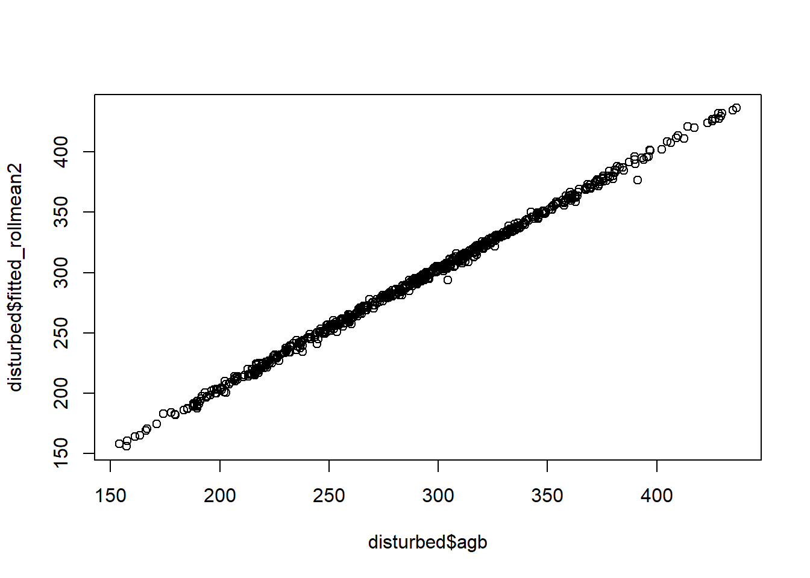
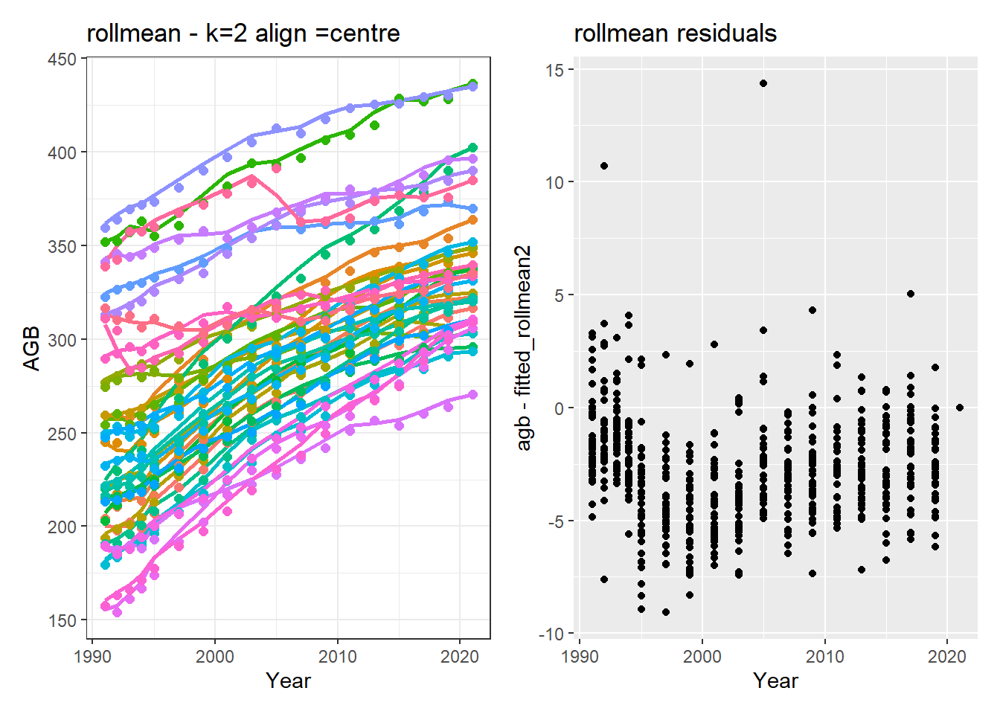

Code
library(mgcv); library(data.table); library(gratia); library(marginaleffects); library(ggplot2); library(dplyr); library(tidyr); library(zoo); library(slider); library(here)Key: <Year>
Year plot subplot FDis FDiv FEve FRic LA_cwm_ba
<int> <fctr> <fctr> <num> <num> <num> <num> <num>
1: 1991 10 10_1 0.7960894 0.6289475 0.4432253 0.2187201 5902.522
2: 1991 10 10_2 0.8114450 0.6554024 0.5357805 0.2653902 5941.867
3: 1991 10 10_3 0.8707989 0.6375974 0.4476806 0.3929498 5412.910
4: 1991 10 10_4 0.8512016 0.6709110 0.4578660 0.4170996 5524.074
5: 1991 12 12_1 0.9292768 0.6738438 0.4710286 0.4393959 4658.220
6: 1991 12 12_2 0.8176223 0.7069917 0.4332903 0.4923232 5926.716
LA_cwm_gba LA_cwm_mba LA_cwm_n LA_cwm_rba LA_cwmdiff_all LA_cwmdiff_gba
<num> <num> <num> <num> <num> <num>
1: 7102.512 1952.238 7807.335 18718.075 598.2178 113.86902341
2: 6219.887 6343.695 7301.781 20268.785 659.2784 307.03489956
3: 5458.322 1913.479 6643.187 5091.123 131.9530 0.02718786
4: 6186.410 6590.450 7101.562 13194.235 105.1270 41.61966151
5: 4733.873 1302.064 5568.025 10550.037 279.5638 74.18563690
6: 5498.659 6727.328 6768.239 13897.224 143.3495 23.84872917
LA_cwmdiff_mba LA_cwmdiff_rba LA_cwv_n N_cwm_ba N_cwm_gba N_cwm_mba
<num> <num> <num> <num> <num> <num>
1: 101.773693 382.57512 0.8246170 19.77254 20.01273 16.80392
2: 5.538824 346.70471 0.7673300 20.03984 20.06012 20.49495
3: 111.586279 20.33952 1.1539315 20.26993 20.29652 14.21836
4: 14.664930 48.84244 1.0290582 19.24997 19.62190 20.69116
5: 136.187881 69.19032 1.0943023 18.55119 19.50802 14.37601
6: 12.474122 107.02669 0.8991331 19.79249 19.20401 19.44922
N_cwm_n N_cwm_rba N_cwmdiff_all N_cwmdiff_gba N_cwmdiff_mba N_cwmdiff_rba
<num> <num> <num> <num> <num> <num>
1: 20.12133 21.83241 0.088710690 0.004276294 0.046651367 0.037783029
2: 20.31024 23.09274 0.064975805 0.024909741 -0.001922900 0.041988964
3: 20.25436 19.95972 0.182970099 0.005015233 0.179711566 -0.001756701
4: 19.73352 20.63763 0.010841074 0.015496682 -0.010023292 0.005367685
5: 19.43537 21.12125 0.172351105 0.033123652 0.124270479 0.014956974
6: 19.66281 21.12173 0.009072041 -0.007083166 0.008454216 0.007700991
N_cwv_n SLA_cwm_ba SLA_cwm_gba SLA_cwm_mba SLA_cwm_n SLA_cwm_rba
<num> <num> <num> <num> <num> <num>
1: 0.03463076 11.94667 12.87687 9.352012 12.18339 14.84070
2: 0.03252460 13.27279 13.98342 14.445117 12.96391 15.88243
3: 0.03860285 13.15991 13.42592 8.380459 12.36081 11.97182
4: 0.03897665 12.42566 13.21544 16.517630 12.33603 14.22411
5: 0.04495420 12.20022 13.69649 8.691784 12.50808 14.33027
6: 0.03584680 13.13722 13.20725 11.046345 12.68365 15.60399
SLA_cwmdiff_all SLA_cwmdiff_gba SLA_cwmdiff_mba SLA_cwmdiff_rba SLA_cwv_n
<num> <num> <num> <num> <num>
1: 1.240980e-01 0.026248700 0.046322933 0.051526391 0.08266980
2: 5.130001e-02 0.027505799 -0.006336658 0.030130868 0.12619845
3: 1.411102e-01 -0.004912969 0.154325025 -0.008301849 0.09748054
4: 4.643997e-05 0.022514403 -0.028458488 0.005990525 0.09407853
5: 1.459031e-01 0.026822681 0.108896361 0.010184087 0.14268492
6: 6.311520e-02 0.010647918 0.038929344 0.013537943 0.09476930
WD_cwm_ba WD_cwm_gba WD_cwm_mba WD_cwm_n WD_cwm_rba WD_cwmdiff_all
<num> <num> <num> <num> <num> <num>
1: 0.7151444 0.6604682 0.7718982 0.7078515 0.4876643 -0.0068595441
2: 0.6869719 0.6411392 0.6936875 0.6764961 0.4428758 -0.0066901290
3: 0.7224287 0.6705972 0.6845935 0.7200174 0.6326422 -0.0001574712
4: 0.6913057 0.6649741 0.5681992 0.7025745 0.5447957 -0.0005079950
5: 0.7191494 0.6604368 0.7182717 0.7121144 0.5758958 -0.0020886657
6: 0.7447326 0.6996488 0.7499049 0.7382859 0.5495923 -0.0021060524
WD_cwmdiff_gba WD_cwmdiff_mba WD_cwmdiff_rba WD_cwv_n agb agb_growth
<num> <num> <num> <num> <num> <num>
1: -0.001946913 -8.921111e-04 -0.0040205203 0.05552682 202.9145 4.439106
2: -0.003462987 3.562444e-05 -0.0032627661 0.06634948 204.1282 5.744878
3: -0.001028022 1.290434e-03 -0.0004198836 0.04127922 254.3581 4.881370
4: -0.001028033 1.023767e-03 -0.0005037286 0.04632061 245.0183 6.657347
5: -0.001709555 3.820626e-04 -0.0007611734 0.04684793 214.5880 4.933022
6: -0.001016254 -3.040972e-05 -0.0010593891 0.04054320 259.2655 4.765314
agb_mort agb_recr ba ba_growth ba_mort ba_recr coverage_gen
<num> <num> <num> <num> <num> <num> <num>
1: 9.285945 1.6396059 16.97381 0.3577855 0.6491236 0.30773652 0.9680655
2: 2.543004 1.1306250 17.77750 0.4610954 0.2566140 0.23891041 0.9787918
3: 9.532706 0.6424048 20.61706 0.3736586 0.6880464 0.10106083 0.9748396
4: 1.939095 0.4542925 21.56247 0.5199240 0.2069787 0.08371401 0.9787765
5: 9.273967 0.6928680 18.12841 0.3876658 0.6019728 0.11270685 0.9493677
6: 18.593813 0.7289960 22.01196 0.3580595 1.1294562 0.12686655 0.9681534
coverage_sp dbh_max dbh_mean dbh_median dbh_min diversity_q0_gen
<num> <num> <num> <num> <num> <num>
1: 0.9430763 77.35 19.72996 16.87 10.03 75
2: 0.9577123 76.39 20.22968 17.67 10.03 83
3: 0.9374377 79.42 20.82226 17.19 10.03 83
4: 0.9564906 87.54 20.40530 17.83 10.03 89
5: 0.9025691 77.35 20.34926 17.19 10.03 108
6: 0.9126078 59.84 20.27795 17.35 10.03 101
diversity_q0_sp diversity_q1_gen diversity_q1_sp diversity_q2_gen
<num> <num> <num> <num>
1: 92 32.18798 38.23633 18.52618
2: 98 38.66304 46.89408 21.26856
3: 101 40.09459 46.56176 23.82117
4: 113 40.11715 49.52538 22.02203
5: 156 48.07433 70.19027 26.66629
6: 162 39.66686 55.42735 20.32065
diversity_q2_sp evenness_gen evenness_sp gini nstem nstem_mort
<num> <num> <num> <num> <num> <num>
1: 20.75741 0.8040770 0.8058285 0.2440772 448.00 10.24
2: 25.97919 0.8271138 0.8392407 0.2402110 456.32 8.32
3: 27.49563 0.8353416 0.8322165 0.2592104 484.48 8.96
4: 24.30130 0.8224778 0.8255056 0.2364350 547.20 4.48
5: 36.02632 0.8271337 0.8418477 0.2515999 449.28 7.04
6: 22.18311 0.7974908 0.7891886 0.2364958 573.44 14.72
nstem_recr p_imputed_LA p_imputed_N p_imputed_SLA p_imputed_WD p_undet_gen
<num> <num> <num> <num> <num> <num>
1: 27.52 0.5363372 0.4593023 0.4578488 0.39244186 0.017142857
2: 21.76 0.5574468 0.4624113 0.4638298 0.38581560 0.011220196
3: 11.52 0.5278515 0.4323607 0.4323607 0.38461538 0.003963012
4: 8.96 0.5732861 0.4964539 0.4964539 0.43144208 0.010526316
5: 12.16 0.3405797 0.1608696 0.1637681 0.06086957 0.017094017
6: 12.80 0.2870159 0.1560364 0.1526196 0.05011390 0.020089286
p_undet_spp mean_z_tmax mean_z_vpd mean_z_srad mean_z_def Treatment
<num> <num> <num> <num> <num> <char>
1: 0.12285714 -0.5156516 -0.5937576 0.1831808 -0.1487579 disturbed
2: 0.10659187 -0.5156516 -0.5937576 0.1831808 -0.1487579 disturbed
3: 0.11360634 -0.5156516 -0.5937576 0.1831808 -0.1487579 disturbed
4: 0.11461988 -0.5156516 -0.5937576 0.1831808 -0.1487579 disturbed
5: 0.05128205 -0.5156516 -0.5937576 0.1831808 -0.1487579 disturbed
6: 0.05580357 -0.5156516 -0.5937576 0.1831808 -0.1487579 disturbedWarning: There was 1 warning in `mutate()`.
ℹ In argument: `fitted_GAM5 = predict(gam(agb ~ s(Year, k = 5), data =
cur_data()), newdata = cur_data())`.
ℹ In group 1: `subplot = 10_1`.
Caused by warning:
! `cur_data()` was deprecated in dplyr 1.1.0.
ℹ Please use `pick()` instead.#| label: "GAM k=5"
disturbed <- disturbed %>%
group_by(subplot) %>%
mutate(
fitted_GAM8 = predict(
gam(agb ~ s(Year, k = 8), data = cur_data()),
newdata = cur_data()
)
)%>%
ungroup()
p1=ggplot(disturbed, aes(x = Year, y = fitted_GAM5, color = subplot)) +
geom_line(size = 1) + # predicted trajectory
geom_point(data = disturbed,
aes(x = Year, y = agb, color = subplot),
inherit.aes = FALSE, size = 2) + # observed points
theme_bw() +
labs(x = "Year",
y = "AGB", title="GAM-k=5") + theme(legend.position = "none")Warning: Using `size` aesthetic for lines was deprecated in ggplot2 3.4.0.
ℹ Please use `linewidth` instead.
